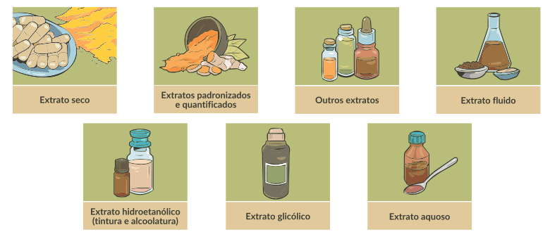
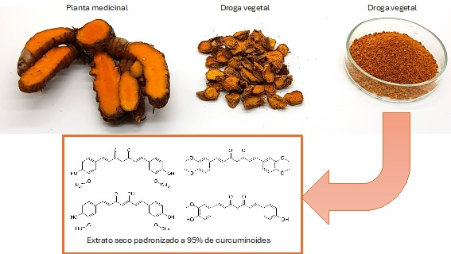

Os extratos são obtidos pela extração com solventes específicos a partir das drogas vegetais. Na maioria dos casos, os extratos secos são adquiridos com fornecedores externos. Clique em cada uma das imagens e conheça as formas de extratos mais utilizados.

Extratos padronizados e quantificados
Os extratos padronizados correspondem àqueles extratos que são ajustados a um conteúdo definido de um ou mais constituintes, responsáveis pela atividade terapêutica (marcador ativo) e/ou que caracterizam quimicamente a espécie vegetal (marcador analítico). O ajuste do conteúdo é obtido pela adição de excipientes inertes ou pela mistura de outros lotes de extrato. Por exemplo, Matricaria chamomilla (camomila) pode ser prescrita na forma de extrato seco padronizado, contendo 1,2% de apigenina. Da mesma forma, Curcuma longa (cúrcuma) pode ser prescrita na forma de extrato seco padronizado a 95% de curcuminoides.
Vantagens da utilização dos extratos padronizados e quantificados:
• Dose mais precisa dos constituintes para o paciente;
• Maior estabilidade do que as preparações líquidas;
• Os ativos estão mais disponíveis para absorção, pois já foram extraídos das células
vegetais, diferente da droga vegetal.

Desvantagens da utilização dos extratos padronizados e quantificados:
• Estes extratos padronizados e quantificados são mais caros, comparados com o custo da droga vegetal, em virtude da complexidade da obtenção.
Os extratos quantificados correspondem àqueles extratos ajustados para uma faixa de conteúdo de um ou mais marcadores ativos. O ajuste da faixa de conteúdo é obtido pela mistura de lotes de extrato. Por exemplo, extrato seco de Baccharis trimera (carqueja) quantificado de 0,1 a 0,2% de flavonoides.

Exemplo de produção de extrato seco padronizado de Curcuma longa.

Fonte: Elaboração pelos autores com imagens de acervo pessoal.